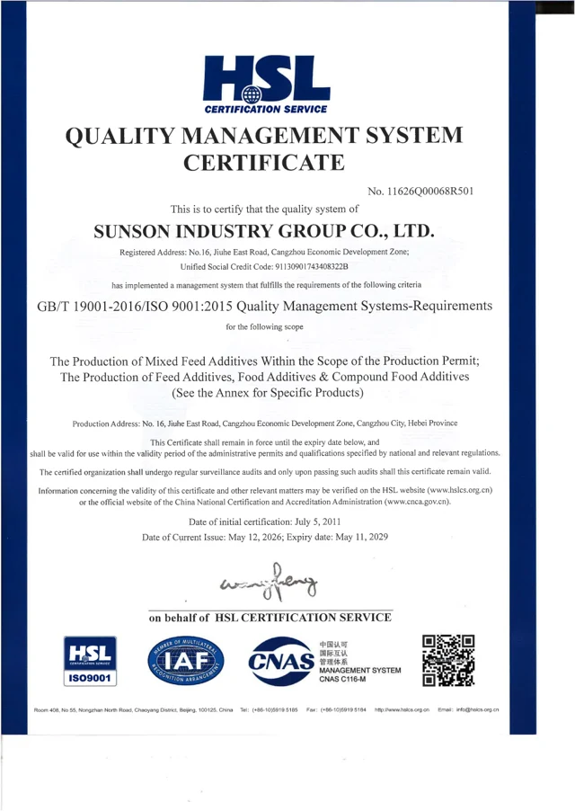
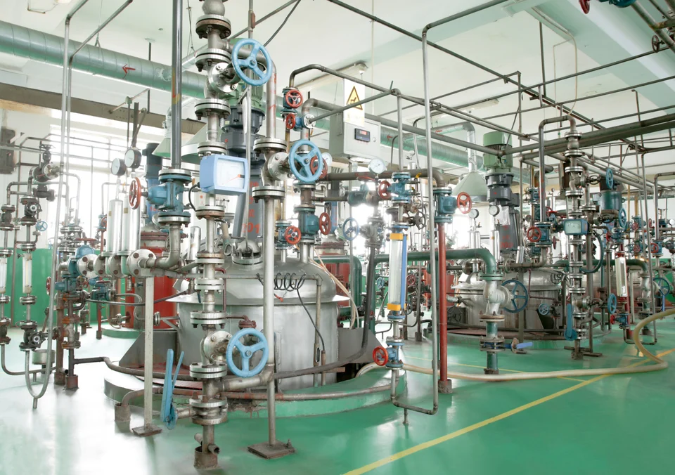
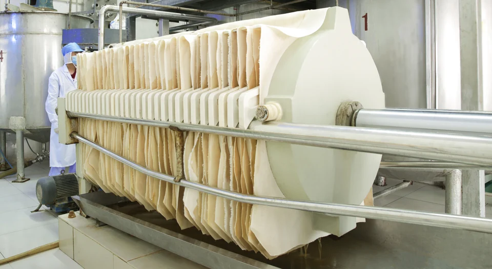
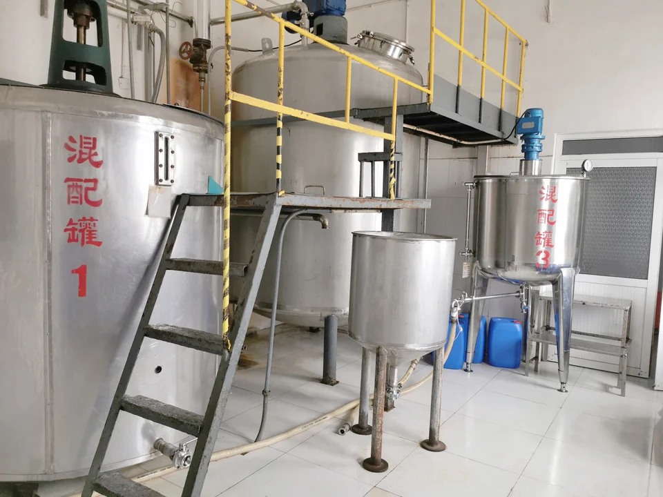
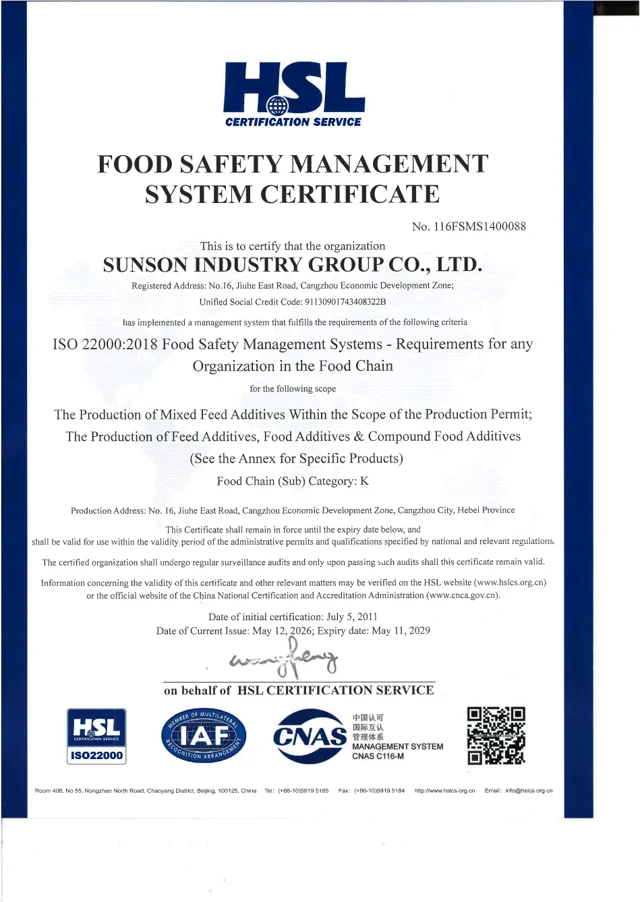
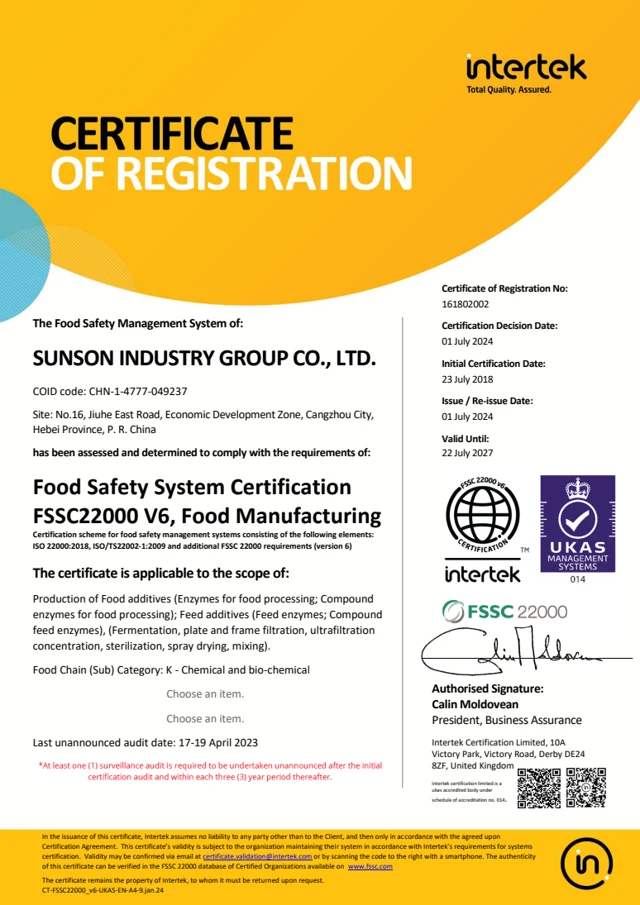
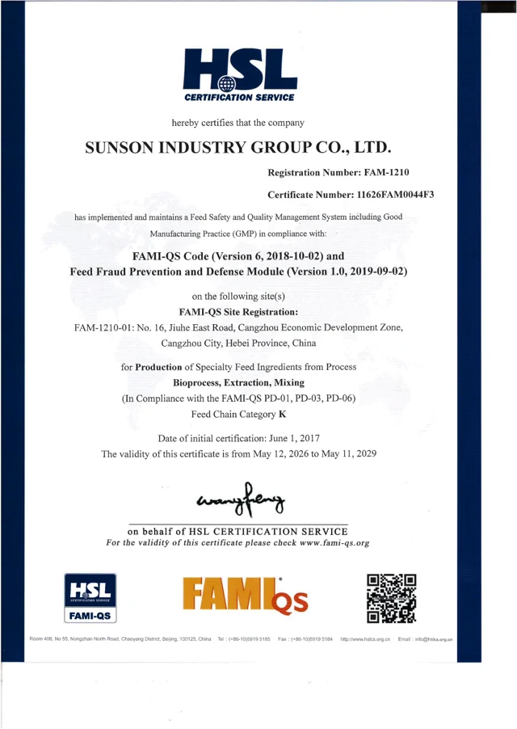
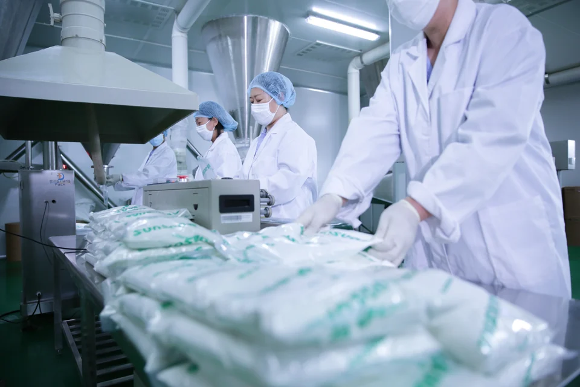

ISO 9001:2015
Activities covered
Production of mixed feed additives within the production permit, feed additives, food additives and compound food additives. The PDF includes the product annex.
SUNSON’s production background spans facilities in Yinchuan and Cangzhou and capabilities in fermentation, separation, concentration and formulation. Supplier review connects this manufacturing background with the selected product.

Enzyme production and formulation are linked stages. The resulting preparation has an identity, physical form and specification that need to match the documents used by the customer. Manufacturing-site information is confirmed for the selected product.


A product specification describes the product; a COA reports results for one batch. Site certificates cover the company, location and activities named on each document.
The certificates below name SUNSON INDUSTRY GROUP CO., LTD. at No. 16, Jiuhe East Road, Cangzhou Economic Development Zone, Hebei, China. Open the original PDFs to review the listed activities and any product annexes.

Production of mixed feed additives within the production permit, feed additives, food additives and compound food additives. The PDF includes the product annex.

Food safety management for the listed feed and food additive production activities, food-chain category K. The PDF includes the product annex.

Production of food-processing enzymes, compound food-processing enzymes, feed enzymes and compound feed enzymes. The PDF lists the production stages.

Production of specialty feed ingredients through bioprocess, extraction and mixing, under the FAMI-QS process documents and feed-chain category K.
Dates shown are those printed on the supplied documents. Each PDF includes the issuer’s verification details for checking certification status. These site records do not certify every SUNSON site or product.
Use your product and batch reference when contacting the SUNSON team handling your order. A COA belongs to that batch and is supplied separately.

For Halal, Kosher or Non-GMO requirements, include the product reference and intended market. We can identify the applicable product information and supporting documents for your review.